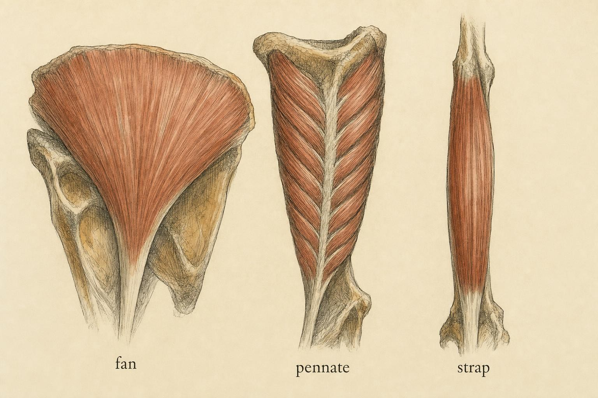
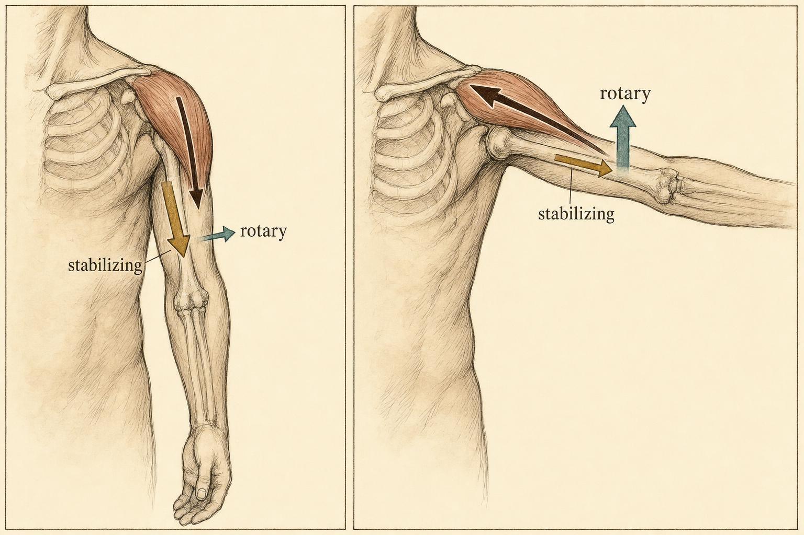

Muscle Architecture and the Line of Pull
Why a fan, a feather, and a strap all "contract" — and why that word tells you almost nothing.
Put two muscles side by side and ask them to do the same job. The sartorius runs as a single long strap diagonally across the thigh, its fibers stretching nearly the whole length of the belly. The medial gastrocnemius, by contrast, packs hundreds of short fibers at a slant against a broad internal sheet of tendon, like the barbs of a feather. Both are "contractile." Both shorten when their motor units fire. Yet the gastrocnemius can generate several times the force of the sartorius, while the sartorius can shorten through a range the gastrocnemius could never dream of. Neither is a better muscle. They are answers to different mechanical questions.
In Class 2 you learned to treat bones as levers and joints as pivots — passive hardware waiting for something to drive it. This chapter opens up the engine. And the first surprise is that the engine's shape, not just its size, decides what kind of work it is built to do.
Opening the muscle: fascicles, pennation, and PCSA
Strip a muscle down and you find bundles of fibers — fascicles — arranged in a characteristic pattern relative to the tendon that will ultimately transmit their force to bone. That arrangement is what we mean by muscle architecture, and Lieber and Fridén (2000) argue in their landmark review that it is "the single most important determinant" of a muscle's function — more predictive of how a muscle behaves than its fiber-type profile, its mass, or its name.
Three numbers capture most of what matters. Fascicle (fiber) length is how far the contractile machinery runs before it hands off to tendon. Pennation angle is the angle at which fibers attach to the tendon — zero in a strictly parallel muscle, and as much as 20–30° in a heavily feathered one. And physiological cross-sectional area (PCSA) is the total cross-sectional area of all the fibers measured perpendicular to their own long axis, not perpendicular to the whole muscle. That distinction is the whole game, because force is produced by sarcomeres pulling in parallel, and PCSA is simply a proxy for how many sarcomeres are arranged side by side.
The canonical estimate ties the three together for a fixed muscle volume:
PCSA ≈ (Volume × cos θ) / fascicle length
Read it slowly. For a given lump of tissue, the shorter the fascicles, the more of them you can pack across the muscle's width, and the larger the PCSA. Pennation is what lets you do that packing without the muscle ballooning — angled fibers occupy space efficiently against a broad internal aponeurosis. This is why the strongest muscles in the body, by PCSA, are not the ones with the longest bellies. In Ward and colleagues' (2009) high-fidelity dissection of 21 human lower limbs, the soleus, gluteus medius, and vastus lateralis topped the PCSA rankings — all short-fibered and pennate — while the sartorius, gracilis, and semitendinosus, the long straps, had the greatest excursion capacity and comparatively small PCSA.

Same word, "contraction" — three utterly different machines." data-image-idx="0" style="display:block;max-width:100%;max-height:75vh;height:auto;width:auto;margin:0 auto;cursor:pointer;">The trade-off, stated cleanly: parallel versus series
The classic way to remember all of this comes from Wickiewicz, Roy, Powell, and Edgerton's (1983) cadaveric study of the human lower limb, which sorted muscles by their predilection for tension versus velocity. Their formulation still holds: tension is a function of sarcomeres in parallel; velocity and range of shortening are functions of sarcomeres in series.
Line sarcomeres up end to end along a long fiber and each one's small shortening adds to the next, so the fiber shortens far and fast — but only one sarcomere's worth of force crosses any given cross-section. Stack sarcomeres side by side and their forces sum, but the fiber as a whole shortens only as much as a single sarcomere can. Every muscle in your body is a particular budget split between these two options, spent within a fixed tissue volume. You cannot buy both. Zajac (1989), formalizing the "musculotendon actuator" model that still underlies most biomechanical simulation, made this budget explicit: a muscle's force–length and force–velocity behavior can be scaled almost entirely from its architecture once you know PCSA and fiber length.
This is not an abstraction you will meet only in a textbook. It is the reason a calf muscle can hold your entire body weight on tiptoe but moves the ankle through a small arc, and the reason a hamstring can whip the shin through a wide, fast swing but yields to a heavy load. When you watch a lift, you are watching architecture spend its budget.
Pennation is a mechanical advantage, not a penalty
Look back at the PCSA equation and you will notice a cos θ lurking in it. Because a pennate fiber pulls at an angle to the tendon, only the component of its force along the tendon's line is transmitted onward — Ftendon = Ffiber × cos θ. Taken alone, that looks like a tax on pennation: angle your fibers and you throw away a slice of their force. For decades the textbook story stopped there, treating pennation as a necessary evil tolerated for the sake of packing.
Recent modeling has overturned that framing. Using physiologically informed geometric muscle models, a 2024 study in Royal Society Open Science showed that a pennate arrangement can allow a muscle to produce up to six times more isometric force than a non-pennate muscle of the same volume. The authors coined the term pennation mechanical advantage to resolve the old ambiguity: the cos θ "loss" at each fiber is dwarfed by the enormous gain in the number of fibers you can install in parallel when they lie at an angle. Pennation is not the price of packing — pennation is the packing, and it is a net win for force wherever range is not the priority (Royal Society Open Science, 2024).
There is a subtlety worth carrying forward, and it explains a persistent messiness in the literature: because fibers rotate to steeper angles as they shorten, pennation angle is not a fixed property but changes throughout a contraction. This is one reason Ward et al. (2009) opened their study by asking whether current architecture measurements are even accurate — much published data comes from formalin-fixed cadavers at a single, often unspecified, joint angle. When you read a PCSA figure, ask at what length it was measured.
Fiber type: shading, not switching
Architecture sets a muscle's mechanical envelope; fiber-type composition shades where inside that envelope the muscle prefers to work. We will stay strictly on the applied side here — the biochemistry of energy systems belongs to another course. What matters for reading a lift is that fibers differ in their myosin heavy-chain isoform, and that isoform sets contraction speed and fatigue resistance. Schiaffino and Reggiani (2011), in their comprehensive review, describe the human continuum: type I (slow, fatigue-resistant), type IIa (fast, moderately fatigue-resistant), and type IIx (fastest, most powerful, quickest to fatigue).
Two practical consequences follow. First, a muscle biased toward type I fibers — the postural soleus is the classic example — will feel tireless under sustained low load but will not produce force quickly. A muscle rich in type II fibers can generate high force rapidly but pays for it in fatigue. Second, and more useful at the whiteboard, is the size principle of motor-unit recruitment: within any single muscle the nervous system recruits smaller, slower units first and calls in the larger, faster ones only as force demand climbs. A single muscle therefore serves a range of demands, from a delicate hold to an all-out effort, by choosing which of its motor units to switch on. Fiber type is not a fixed label stamped on a whole muscle so much as a distribution the nervous system reads from as it needs.
The line of pull: a muscle is a vector
Now the pivot of the whole chapter. Everything so far has been about how much force a muscle can make. The equally important question is in which direction it delivers that force to the bone. A muscle does not simply "shorten"; it tugs its insertion toward its origin along a specific line in space. Model that tug as a line of pull — a vector running from origin to insertion — and you can immediately ask the question that governs movement: what is the angle between the line of pull and the bone it acts on?
That angle matters because a single pulling force splits into two components. The part perpendicular to the bone is the rotary component — it swings the bone about the joint and is the only part that produces movement. The part parallel to the bone is the stabilizing (or compressive) component — directed along the shaft, it either presses the joint surfaces together or tries to pull them apart, but it produces no rotation. When the line of pull is exactly perpendicular to the bone, every unit of force becomes rotation. When it runs nearly along the bone, almost all of the force is spent squeezing the joint and precious little turns it.
The deltoid is the perfect case, because its line of pull changes character as the arm elevates. With the arm hanging at your side, the deltoid's fibers run almost parallel to the humerus — its line of pull is steeply aligned with the bone, so a large fraction of its force is compressive, pressing the humeral head into the socket, and only a small rotary component initiates abduction. This is precisely why the first few degrees of raising the arm feel mechanically awkward and why other muscles help initiate the motion. As the arm rises toward horizontal, the angle between the deltoid's line of pull and the humerus opens up, the rotary component grows, and the muscle becomes a far more effective elevator. Same muscle, same "contraction" — a completely different mechanical contribution at two joint angles.

The deltoid's force is constant in magnitude; its usefulness for rotation is not." data-image-idx="1" style="display:block;max-width:100%;max-height:75vh;height:auto;width:auto;margin:0 auto;cursor:pointer;">Muscles that cross two joints
The line-of-pull picture gets richer — and stranger — when a muscle spans more than one joint. The rectus femoris crosses both hip and knee; the hamstrings cross hip and knee; the gastrocnemius crosses knee and ankle. These biarticular muscles have a single line of pull but two sets of consequences, one at each joint, and the two are welded together because the same fiber shortening acts on both.
Zajac and Gordon (1989) made the counterintuitive core of this explicit in their classic review: a biarticular muscle's net action at each joint depends on the ratio of its moment arms at the two joints, and — most startling of all — a muscle can accelerate a joint it does not even cross, by way of the dynamic coupling of the limb segments. The action you would naively predict from anatomy alone can reverse depending on posture and on what the neighboring muscles are doing.
A more tractable everyday consequence is that a two-joint muscle can drive motion at one joint while the other is held fixed. Hold the knee straight and the gastrocnemius becomes a powerful plantarflexor; let the knee bend and it slackens, losing much of its ankle authority — the reason a seated calf raise loads the ankle so differently from a standing one. A 2020 review in the Journal of the Royal Society Interface reframes this apparent complication as a feature: because the ratio of a biarticular muscle's moment arms fixes the ratio of torques it produces at the two joints, the muscle embodies a built-in coordination pattern. It transfers energy between joints and simplifies neural control, which is exactly why engineers keep rediscovering biarticular linkages in walking and jumping robots (Journal of the Royal Society Interface, 2020).
Tension is a function of the number of sarcomeres in parallel; velocity of shortening is a function of the number of sarcomeres in series.
The organizing principle from Wickiewicz, Roy, Powell, and Edgerton (1983)
The bridge to Chapter 4
Notice what the line of pull has quietly delivered. The perpendicular distance from the joint's axis of rotation to the line of pull is the muscle's moment arm — and the rotary component you have been decomposing is force multiplied by that geometry. When the deltoid's line of pull swings away from the humerus as the arm elevates, what is really changing is its moment arm. A 2025 systematic review that assembled 300 moment-arm datasets across the hip, knee, and ankle confirms the general rule: moment arm varies continuously and nonlinearly with joint angle, and even its sign can flip, turning a flexor into an extensor as a joint passes through certain ranges (Annals of Biomedical Engineering, 2025).
That is the seam this chapter has been stitching toward. Architecture tells you how much force a muscle can make; the line of pull tells you the direction it delivers that force; and the moment arm is the geometric lever that converts the two into torque — the actual turning effect at the joint. In Chapter 4, line of pull and lever arm finally multiply together. Everything you just learned to trace becomes one term in an equation.
Key Takeaways
- Muscle architecture — fascicle length, pennation angle, and PCSA — predicts a muscle's function better than its size or name (Lieber & Fridén, 2000).
- For a fixed volume, force scales with sarcomeres in parallel (PCSA) and range/velocity with sarcomeres in series (fascicle length); you cannot maximize both.
- Pennation is a mechanical advantage: the small cos θ "loss" per fiber is far outweighed by the extra fibers you can pack in parallel — up to a sixfold force gain (Royal Society Open Science, 2024).
- Fiber type shades a muscle toward endurance or rapid high force; the size principle lets one muscle serve many demands by recruiting motor units in order (Schiaffino & Reggiani, 2011).
- A muscle is a vector: its line of pull splits into a rotary component (produces motion) and a stabilizing component (compresses the joint), and the split changes with joint angle.
- Biarticular muscles couple two joints through the ratio of their moment arms and can even act on joints they don't cross (Zajac & Gordon, 1989).
You can now trace a line of pull and judge whether an architecture favors force or range. Chapter 4 gives that geometry a number. We define the moment arm precisely, watch it change through a joint's range, and assemble the torque equation — force times lever arm — that lets you predict, joint angle by joint angle, exactly where a lift will feel hard and where it will feel easy.
References
Biarticular muscles in light of template models, experiments and robotics: A review. (2020). Journal of the Royal Society Interface, 17(163), 20180413.
Lieber, R. L., & Fridén, J. (2000). Functional and clinical significance of skeletal muscle architecture. Muscle & Nerve, 23(11), 1647–1666.
Muscle moment arm–joint angle relations in the hip, knee, and ankle: A visualization of datasets. (2025). Annals of Biomedical Engineering.
Rethinking the physiological cross-sectional area of skeletal muscle reveals the mechanical advantage of pennation. (2024). Royal Society Open Science, 11(9), 240037.
Schiaffino, S., & Reggiani, C. (2011). Fiber types in mammalian skeletal muscles. Physiological Reviews, 91(4), 1447–1531.
Ward, S. R., Eng, C. M., Smallwood, L. H., & Lieber, R. L. (2009). Are current measurements of lower extremity muscle architecture accurate? Clinical Orthopaedics and Related Research, 467(4), 1074–1082.
Wickiewicz, T. L., Roy, R. R., Powell, P. L., & Edgerton, V. R. (1983). Muscle architecture of the human lower limb. Clinical Orthopaedics and Related Research, 179, 275–283.
Zajac, F. E. (1989). Muscle and tendon: Properties, models, scaling, and application to biomechanics and motor control. Critical Reviews in Biomedical Engineering, 17(4), 359–411.
Zajac, F. E., & Gordon, M. E. (1989). Determining muscle's force and action in multi-articular movement. Exercise and Sport Sciences Reviews, 17, 187–230.